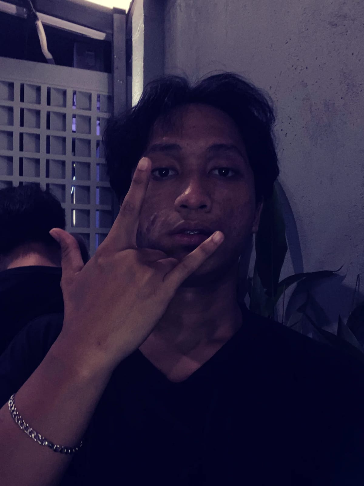

Aplikasi web deteksi berita palsu yang membandingkan model TF-IDF + Logistic Regression dengan IndoBERT hasil fine-tuning, dilatih di Google Colab (GPU T4) karena laptop kerja tanpa GPU. Dibangun ulang di Streamlit dengan halaman prediksi tunggal, prediksi batch (CSV), riwayat, dan dashboard, lalu dirilis ke publik. Hasil penelitiannya juga ditulis ulang jadi artikel jurnal format IMRaD dan diajukan untuk publikasi internasional.
Praktik kerja lapangan di divisi Pusdatin BASARNAS, menangani infrastruktur jaringan, monitoring CCTV berbasis WLAN, setup server Nutanix & Ubuntu, latihan dasar keamanan siber lewat OverTheWire Bandit, serta pencatatan aset IT dan pengarsipan digital. Hasil kerja dirangkum dan dipresentasikan dalam sidang PKL memakai slide 14 halaman dengan palet warna khas instansi pemerintah/SAR.
Mengelola operasional Wi-Fi & internet gedung, troubleshooting jaringan responsif untuk menekan downtime, serta mendukung instalasi dan konfigurasi perangkat Switch/Router dan infrastruktur audio-visual untuk rapat rutin.
Aplikasi web berbasis Laravel dengan fitur export laporan ke PDF dan visualisasi data dalam bentuk chart, dibangun untuk melatih alur kerja full-stack dari database sampai tampilan akhir.